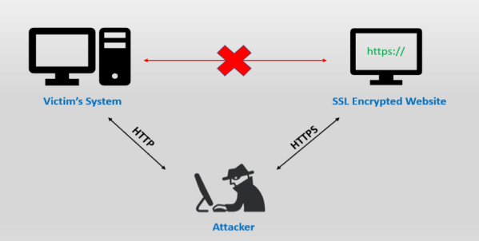

Intercept SSL traffic
To see how SSL work go to this chapter:
Secure
Sockets Layer(SSL)When we sniff unencrypted traffic we do no not manipulate the traffic, we just
intercept it and forward it to the target machine.
•
Self signed(fake) certificate:
When we have SSL encrypted traffic we have to generate a
self-signed(fake) SSL certificate that will be sent to the victim machine every time
it tries to establish an SSL connections. If the victim user accepts the certificate, then we will be able to
decrypt the traffic.
The problem to generate a
self-signed(fake) SSL
certificate is that it will likely cause a security exception on the victims machine, most unconscious users anyway
will just bypass this warning :)
•
SSL stripping(SSL downgrade):
sslstrip is a MITM tool of Moxie Marlinspike's that implement the SSL stripping attacks (
Black
Hat 2009)
SSL stripping is a technique by which a website is downgraded from https to http. This is also
known as SSL downgrading.
1. The attacker first performs a MITM attack on the connection between the
victim and the server.
2. Users don’t typically come to SSL-secured sites by typing in a full URL or using a
bookmarked https://url. Many arrive via a redirect (like the 302 redirect) or an HTTP site which provides a link to
the secured site.
3. The attacker intercepts the insecure HTTP request from the victim and creates an
independent, legitimate connection to the destination server through HTTPS protocol
4. When attackers receive
the server’s response, the attacker send it to the victim in unencrypted format, posing as the
server
Check this
CHAPTER
to see how sslstrip work(tool outdated)

•
SSL stripping+ to bypass HSTS
SSL Stripping (or SSL Downgrade) does not work anymore with some websites and with newer web browser
because of a new security feature: HSTS
HTTP Strict Transport Security (HSTS) [
https://tools.ietf.org/html/rfc6797] is a security feature
specified by the
web application or the
browser that prevents the protocol downgrade from HTTPS to HTTP
These are the
browsers that support HSTS:
https://caniuse.com/#feat=stricttransportsecurityThe
HSTS feature anyway does not work if the victim tries the connection to the web application for the first time! This
because the web browser does not know if the web application use or not a secure connection, since it never received
the HSTS header.
In order to defeat this issue, web browser implemented the so called “
preload lists”, which contain sites that have to be accessed with a secure
connection, even if it is the first time
preload lists
◇ Chrome → github:
https://github.com/chromium/hstspreload site:
https://hstspreload.org/ ◇ Chromium →
https://src.chromium.org/viewvc/chrome/trunk/src/net/http/transport_security_state_static.json
◇ Firefox →
https://hg.mozilla.org/mozilla-central/file/tip/security/manager/ssl/nsSTSPreloadList.incIn
order to (partially) bypass HSTS security feature, Leonardo Nve Egea presented at
Black
Hat 2014 a new version of sslstrip, named
sslstrip+.
MitMf is one of the tool that implement
sslstrip+ Bibliography:
https://www.venafi.com/blog/what-are-ssl-stripping-attacks